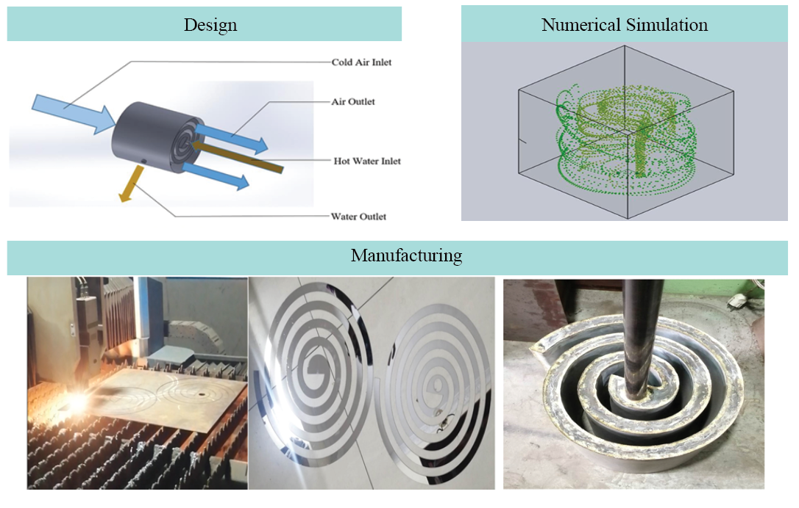

Med_Pro : A Medicine Delivery Drone

DOI: 10.13140/RG.2.2.15596.99200
EsPro is an advanced quadcopter designed for the efficient and timely delivery of medicine from local vendors directly to customers. Equipped with a computer vision-based program, EsPro can accurately detect and verify authorized customers, ensuring that deliveries are made securely and correctly. The drone's manufacturing and control system is designed with a user-friendly interface, making it accessible and manageable for individuals with minimal training. This ease of use ensures that even those without extensive technical knowledge can effectively operate and oversee the delivery process, contributing to a more streamlined and reliable service.
Manufacturing and Numerical Analysis of a Spiral Plate Heat Exchanger
DOI: 10.13140/RG.2.2.33055.78249
A spiral plate heat exchanger has been meticulously designed, manufactured, and evaluated with the primary objective of functioning as an efficient radiator. The system is intended to facilitate heat transfer by utilizing hot water at the inlet for cooling, while cold air circulates between the spiral walls to promote conduction, convection, and radiation heat transfer mechanisms. The governing equations relevant to the heat exchanger's operation have been thoroughly discussed. A laboratory-scale prototype was developed, with spiral plates precision-cut from 3 mm thick mild steel (MS) and spiral walls constructed by rolling a 22-gauge soft MS sheet. The walls were then welded to the boundaries of the spiral plates to form a sealed spiral wall chamber. To assess the performance and effectiveness of the heat exchanger, a preliminary design simulation was conducted using SOLIDWORKS Flow Simulation software. The simulation model was created with SOLIDWORKS. The spiral plate heat exchanger demonstrates several advantages over alternative designs, including reduced fouling, ease of cleaning, and a high heat transfer coefficient. These attributes make it particularly advantageous for applications involving high fouling flows or highly viscous fluids.